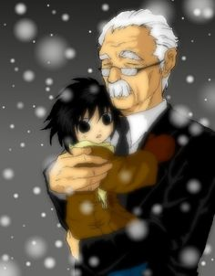
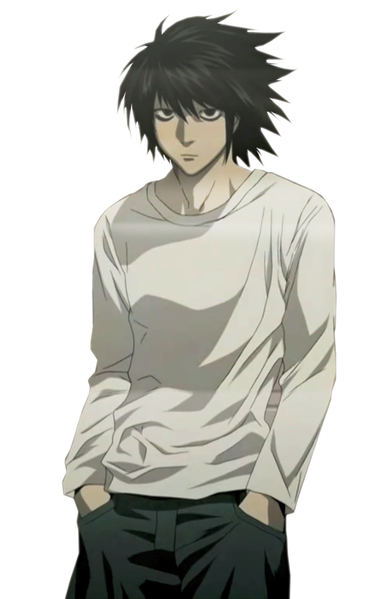

L is a world-renowned detective who takes on the challenge of catching the serial killer known only as Kira. In his investigation, L becomes highly suspicious of Light Yagami and makes it his goal to prove that Light is Kira.
History

L was found by Watari as a child and was taken to the orphanage known as Wammy's House, a home for gifted children. Sometime after, Watari realized that L had incredible intelligence and later assisted him in his cases. L became a detective at a young, unknown age and eventually gained a reputation as the greatest detective in the world whose opinion is highly valued.
Appearance
L is a very slim, tall young man with messy black hair and dark eyes. One of his most noticeable features is the shadow below each of his eyes, a result of him being an insomniac. L is always shown to be wearing blue jean trousers and a long-sleeved white shirt. He almost never wears shoes or socks, preferring to go barefoot, even while in public. This was shown when he visited Light Yagami's school and was seen barefoot while sitting on a bench, not bothering to wear his shoes until he got up to walk.
